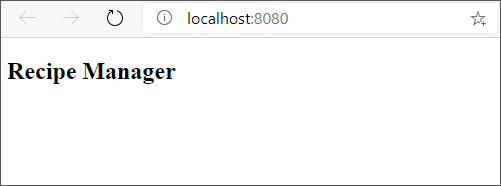

O desenvolvimento do React baseia-se em componentes. Essas unidades autossuficientes são projetadas para reutilização e modularidade. Os projetos do React normalmente contêm muitos componentes.
Um componente pode ser uma função ou uma classe. A maioria dos desenvolvedores do React preferem criar componentes usando funções, portanto, vamos nos concentrar nesse estilo.
Geralmente, os aplicativos têm um componente principal, que costuma ser chamado de App. O App atua como a raiz do aplicativo. Vamos começar criando nosso componente App.
JavaScript
import React from 'react';
function App() {
return (
<article>
<h1>Recipe Manager</h1>
</article>
)
}
export default App;
Começamos o arquivo App.jsx importando React para podermos usar a sintaxe JSX. Em seguida, criamos uma função chamada App, da mesma forma como faríamos com qualquer outra função em JavaScript. Por fim, exportamos a função usando a sintaxe JavaScript padrão. O núcleo do nosso componente está contido na instrução return.
Observe que estamos usando HTML (tecnicamente, XML) incorporado em JavaScript. Essa funcionalidade mostra a potência do JSX. Podemos usar a lógica e a potência do JavaScript para criar unidades de trabalho (componentes) autossuficientes.
O HTML retornado pela função (ou componente) é exibido na página. O título contém o texto Gerenciador de Receita.
Observação
O elemento h1 é aninhado dentro de um elemento HTML 5 article. Como o JSX usa XML, devemos ter um elemento raiz. O elemento article é a raiz desse componente. Essa estrutura nos permite adicionar HTML e outros componentes React à medida que nosso aplicativo cresce.
Vamos atualizar nosso aplicativo para usar o novo componente.
JavaScript
import App from './App';
jsx
<App />
Aqui está o conteúdo completo do index.jsx agora:
jsx
import React from 'react';
import ReactDOM from 'react-dom';
import App from './App';
ReactDOM.render(
<App />,
document.getElementById('app')
);
A instrução import importa o componente usando a mesma sintaxe que usaremos para qualquer outro módulo. Agora podemos usar o componente como se fosse HTML.
Observação
Como o JSX usa a sintaxe XML, devemos fechar a marca App. Podemos fazer isso usando a sintaxe <App></App> de forma longa ou a abreviação de “fechamento autônomo" <App />. Ambas as opções funcionam da mesma forma, mas a maioria dos desenvolvedores usa a opção abreviada.
Salve todos os arquivos. O navegador é atualizado automaticamente com os resultados.
